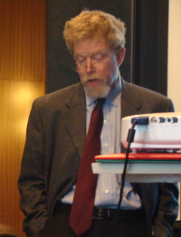

|
 |
COUNTING QUANTITATIVE REASONING AS A TEACHING OF PSYCHOLOGY PRIORITYHow can instructors of psychology help students become (a) more thoughtful consumers of numerical information, (b) more productive users of quantitative inquiry when pursuing their curiosities about the world, and (c) more proficient and principled communicators of statistical evidence in their interactions with others? These educational goals, widely endorsed in discussions of Numeracy and Quantitative Literacy in the agenda of contemporary higher education, are especially relevant to training in psychology. They are the foundation both for scientific and professional careers in psychology and for educated participation in the world of the twenty-first century. Psychology courses--and not just statistics and methods ones--are well-suited to meet the call to strengthen students' numeracy abilities and habits. Not only do psychology courses attract large numbers of students, but they also expose those students to a form of argument largely based on the results of empirical measurements of phenomena and on quantitative tests of hypotheses. This presentation will identify core values and concepts in quantitative reasoning deserving attention across the psychology curriculum. It will highlight 10 questions about numbers well-educated individuals can be prepared to raise when they encounter quantitative claims. These questions include the following: What do the numbers show? How representative is that? Are the results statistically significant? What is the effect size and practical importance of the findings? Are the results those of a single study or of a literature? Moreover, the talk will address how teachers of psychology can use questions such as these to help students develop an amiable skepticism about numerical claims, one that emphasizes an appreciation for the contributions quantitative analysis can make to human understanding rather than cynicism about statistics. The presentation will describe classroom strategies, course assignments, and teaching resources available to strengthen students’ numerical reasoning in psychology. Special attention will be paid to means of encouraging the generalization of students' numerical appreciations, background, and habits both across psychology courses and beyond applications to psychology. As former Harvard University President Derek Bok has written, \"...numeracy is not something mastered in a single course. The ability to apply quantitative methods to real-world problems requires a faculty and an insight and intuition that can be developed only through repeated practice. Thus quantitative material needs to permeate the curriculum,\" (2006). One means of promoting numeracy across the curriculum, including the psychology curriculum, is to encourage writing with numbers when teaching students how to construct and evaluate quantitatively-informed arguments. I will identify common misuses and missed uses of numerical information in written student arguments and present models of exemplary uses of writing with numbers. I will also discuss the important role numbers can play in providing informative background for arguments as well as in evaluating central issues in psychology. In summary, this presentation will highlight the goal of numeracy in higher education and ways in which the teaching of psychology can contribute to achieving that goal, to the benefit of psychology as it is practiced and understood, and of students as they navigate the challenges of contemporary life. |
© 2008 Victor Karandashev